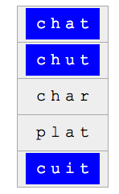

Ratkaisu

Hahmo c??t vastaa 4-kirjaimisia sanoja, joiden ensimmäinen kirjain on c, viimeinen kirjain on t, ja keskellä saa olla kaksi mitä tahansa kirjainta.
Sanalistassa oli seuraavat nämä ehdot täyttävät sanat: chat, chut ja cuit.
Muut sanat eivät täsmää: sanan
char viimeinen kirjain ei ole
t, eikä sanan
plat ensimmäinen kirjain ole
c.

Hahmon ?a…e kanssa täsmäävän sanan toinen kirjain on a ja viimeinen kirjain on e. Ensimmäinen kirjain saa olla mikä tahansa, ja a- ja e-kirjainten välissä saa olla mitä tahansa kirjaimia (tai ei yhtään).
Annetuista sanoista seuraavat täyttivät nämä ehdot: table, rave ja mare.
Muut sanat eivät täsmää: tacher, tartes ja parer eivät pääty e-kirjaimeen, eikä sanojen arrive ja charme toinen kirjain ole a.

Hahmon …pro?…s… kanssa täsmäävä sana sisältää osan pro, jota seuraa yhden tai useamman kirjaimen jälkeen kirjain s. Huomaa, että hahmon osa ?… täsmää yhden tai useamman minkä tahansa kirjaimen.
Huomaa, että sana voi hyvinkin alkaa osalla pro tai päättyä kirjaimeen s.
Seuraavat annetut sanat täyttävät edelliset ehdot: reproches, pronostic, prochains ja promesse.
Muut sanat eivät täsmää: sanat attraper, reposer ja crocheter eivät sisällä osaa pro, eikä sanassa prosterner löydy sellaisia osan pro ja kirjaimen s esiintymiä, joiden välissä olisi vähintään yksi kirjain.
Tämä on tietojenkäsittelyä!
Tehtävässä käytetyt hahmot ovat yksinkertaistettu versio tietojenkäsittelyssä laajasti käytetyistä säännöllisistä lausekkeista, joiden avulla voi suorittaa monipuolisesti hakuja tekstimuotoisesta datasta. Esimerkiksi monissa tekstieditoreissa on mahdollista tehdä säännöllisiin lausekkeisiin perustuvia hakuja.
Katso lisää esim. https://fi.wikipedia.org/wiki/Säännöllinen_lauseke.